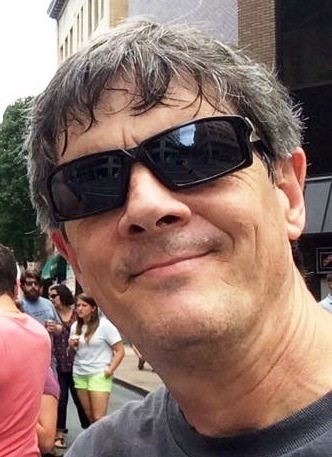
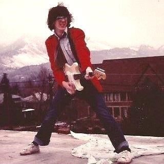

<template>
  <div class="page-content">
    <h3 style="text-align:center; margin:20px; font-weight:bold">Band</h3>
    <p style="margin:auto; max-width:6in">The Web Jam Band has been rehearsing regulaly since the beginning of 2017, with a performance at a summer wedding anniversary house party, followed by a second performance at the annual Bent Mountain Pig Roast.</p>
    <p>&nbsp;</p>
    <div class="elevation3" style="margin:auto">
      <h4 style="text-align:center">Brian Lilienthal</h4>
      
      <p style="max-width:4in; margin:auto">Brian has been playing drums for 13 years and his main set is a Pearl Masters MCX. His favorite music is Ska music, and his drumming influences are Vinnie Fiorello from Less Than Jake, Chris Thatcher from Streetlight Manifesto, Travis Barker from Blink-182, Tre Cool from Green Day, and The Rabbit from Reel Big Fish. His man crushes are Roger Lima, Gerard Way, and Barack Obama. Looking for a nice girl between 23 and 29. Also, Go Hokies!</p>
      <p>&nbsp;</p>
    </div>
    <p>&nbsp;</p>
    <div class="elevation3" style="margin:auto">
      <h4 style="text-align:center">Emerson Harvey</h4>
      
      <p style="max-width:4in; margin:auto">In 1969, I was 12 years old, I heard Jimi Hendrix on the radio and decided I had to learn to play guitar. Self taught for 48 years now. Play lead and rhythm guitar. Favorite axe is still a Fender Stratocaster!

        Influences: Jimi Hendrix, Rolling Stones, Sex Pistols, Ramones, X, Talking Heads, BB King, Buddy Guy, Neil Young……. Can work a harmonica and acoustic guitar on demand.
      </p>
      
    </div>

  </div>
</template>
